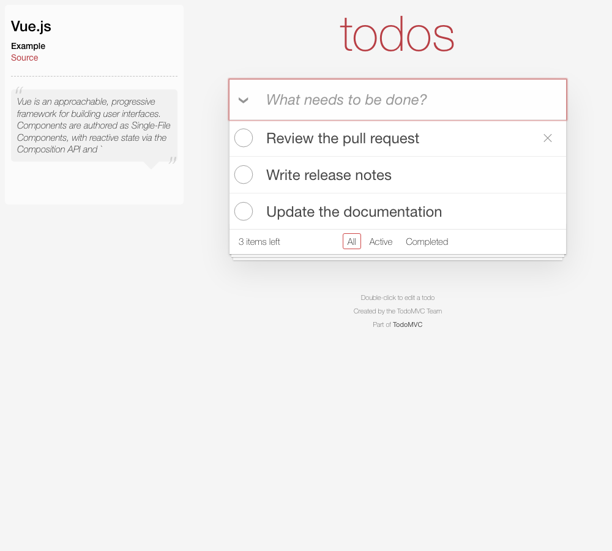
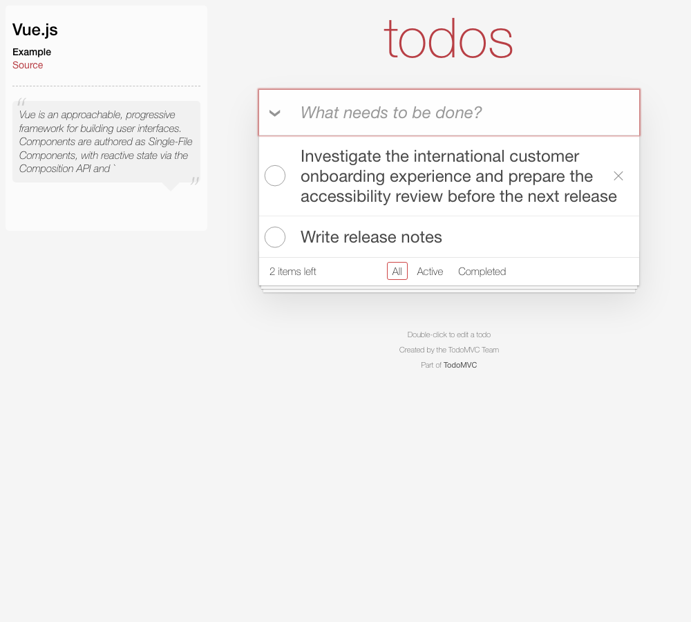

ASSISTED INTEGRATION · 3 NOVEMBER 2026
A complete Vue app, unchanged.
The maintained TodoMVC Vue example passed its normal control and 14/14 supplied stress cases. No defect was found under the declared delete-action rule. Tasks entered through its real form, then the first row was scrolled into view and hovered. An independent browser test clicks delete and verifies the actual first task is removed.
This is not a human adoption study. The application is an official framework showcase refreshed in May 2026, not a production product. The actor was the coding agent already familiar with the tool. Runner changes were needed before the adapter could work.


All 14 cases and measured findings · Campaign data · Timing and friction record
What the integration required
- The runner required an HTTP fixture even though this app receives data through a native form. Added a declarative form input boundary.
- The app deliberately reveals delete on hover, but hover was not a supported setup action. Added an explicit hover setup action.
- Rendered proofs required a single scalar or JSON attribute; the native app exposes a list of labels. Added exact ordered texts proofs.
- The checked-in upstream HTML, JavaScript, CSS and metadata needed to be served without Vite rewriting. Added a restricted raw subject server and raw build asset copies.
- The first TypeScript check rejected readonly tuples from the seeded title generator. Copied generated titles into mutable arrays and reran type checking and tests.
Application changes: 0 source edits, 0 style edits, 0 wrappers. The original prebuilt HTML, JavaScript, CSS, favicon and metadata are served without rewriting. All 16 retained files match upstream Git blob hashes; browser tests also verify the HTTP response bytes. The subject needed no dependency install or rebuild.
Observed milestones
| Milestone | UTC |
|---|---|
| Target confirmed | 2026-11-03T01:28:53Z |
| First runtime control passed | 2026-11-03T01:34:48.756Z |
| First runtime campaign complete | 2026-11-03T01:34:52.344364+00:00 |
| Typecheck and browser suite complete | 2026-11-03T01:38:48.031029+00:00 |
About 5.9 minutes elapsed from target confirmation to the first browser control, and 9.9 minutes to the first passing validation checks. These include source inspection, tool feature work and an adapter type error. Dependencies were already present. They do not establish a first-use setup-time promise.
Self-guided trial, prepared for later
- Choose one action in a local app you own; write the requirement and allowed scrolling/hover policy.
- Record dependency setup separately. Create a config using the app’s real API or form boundary.
- Run a normal control and three valid stress cases without editing the runner. Record blockers as useful evidence.
- Explain a passing, failing or inconclusive result. If a failure is exported, replay it independently and record whether you would keep it.
Download the blank trial worksheet. Full instructions are in TRIAL.md. No independent participant results have been recorded.
Source and scope
TodoMVC Vue · pinned upstream revision · Upstream maintenance statement. The test covers containment and a center-point pointer hit after declared setup. It does not establish overall correctness, mobile touch behavior, accessibility, adoption or comparative debugging speed.